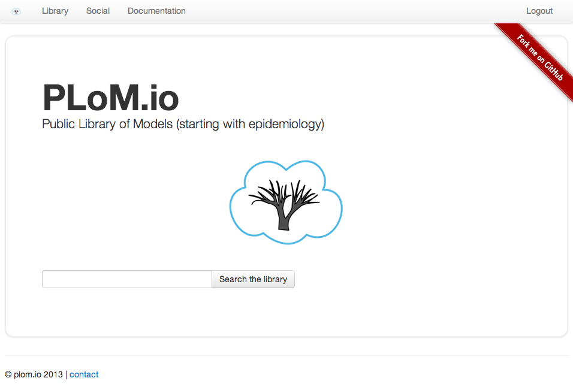

PLoM.io
Public Library of Models
Founded by Sebastien Ballesteros, Tiffany Bogich and Joseph Dureau
Scientific journals foundational goals (1665)

- Fast delivery of science
- Reproducible results
- Communities of natural scientists
Modeling papers present a new challenge
Scientific communication relies on evidence that cannot be entirely included in publications, but the rise of computational science has added a new layer of inaccessibility [...]. The vagaries of hardware, software and natural language will always ensure that exact reproducibility remains uncertain.Nature 482, 485–488 (23 February 2012)
- Reproducible: Lack of source code, build and runtime issues.
- Fast: Reimplementing from scratch is time consuming.
- Social: Models are not shared.
The solution: not a competitor in the old ecosystem, a new ecosystem
Fully embrace the web
- Real time web and scalable cloud computing allow interactions with models.
- Web approach to peer review: reproducibility, scalability, automation and rating.
Modeling made social
Curate a community to work collaboratively in real time.
Unifying the Market
Scientists
One paper per tweet at twitter on an average day in 2010 just in biotechnology (NCBI).
679,858 papers published per year
Decision makers
With each batch of new data, modeling results become outdated.
The NIH invests over $30.9 billion annually in medical research for the American people.
Plom.io Business Model
Publication fees
Open access model.
Guarantee of full reproducibility.
Transparent machine-assisted peer reviewed in minutes.
Models available from any connected device.
Industry standard: PLoS Journals $2900/publication.
Suscription Model
Results remain relevant with automatic updates as new data become available.
Update frequency and length dictated by suscription level.
Platform as a service
Run arbitrarily complex models for institutions lacking hardware facilities or facing sharp deadlines.
Leverage our cloud computing platform for maximal cost efficacy.